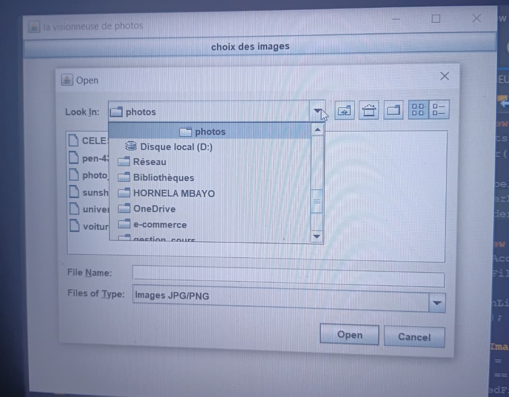

Construire, Tester, Apprendre
Chaque projet est une étape vers la version 2.0
Je ne crois pas aux grandes promesses. Je crois aux résultats.
Ces dernières années, j’ai lancé des projets pour apprendre 3 choses :
la discipline, la résolution de problèmes, et l’impact.
Ma règle : Transformer les idées en résultats concrets.
Je vous presente quelques projets realiser jusque là:
1. VISIONNEUSE.java
Objectif :VISIONNEUSE est un projet à partir du quel on peut choisir, changer, modifier... les photos stockées dans la memoire de son ordinateur ou de son télephone sans entrer dans l'explorateur dufichier ou dans sa galerie
Langage/IDE :JAVA/NetBeans
Résultat :

2. CORAZON.py
Objectif :Ce projet desine un coeur à partir de quelque proportion mathematique, la particularité est que le coeur se trace automatiquement grance à quelques notions mathematiques incorporés dans le code de celui-ci
Langage/IDE : PYTHON/Pycharm
Résultat :
3. PREMIER ARTICLE.tex
Objectif : celui-ci n'est pas un projet proprment dit mais c'est un article que j'ai ecrit qui parle de La femme et l’entrepreneuriat numérique en Afrique; c'est un article qui reunis plusieur choses à la fois et l'outil utilisé "TextStudio" est un bon moyen pour ecrire les TFC, MEMOIRES, ARTICLES...
Langage/IDE : Mixtech/TextStudio
Résultat :
Ceci n'est qu'un debut, mon engagement pour apprendre, construire et avoir un impact se poursuit à travers de nouveaux projets à venir...